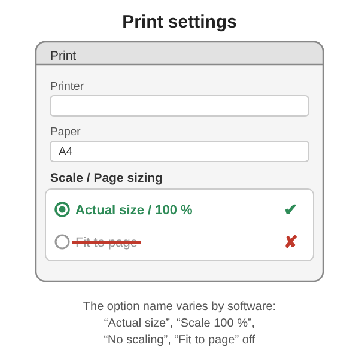
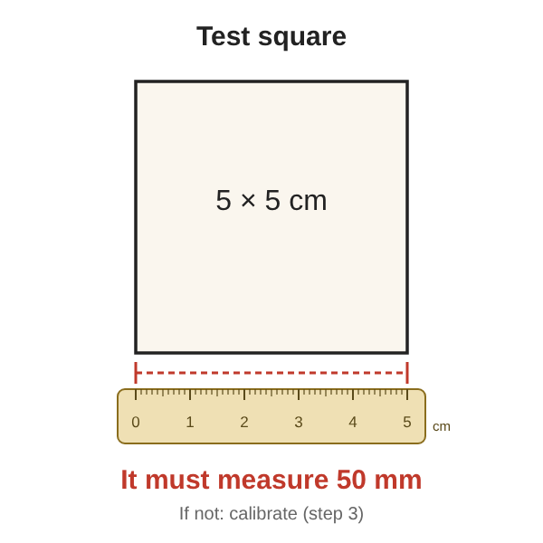
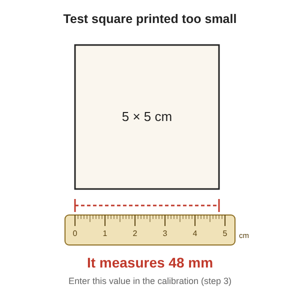
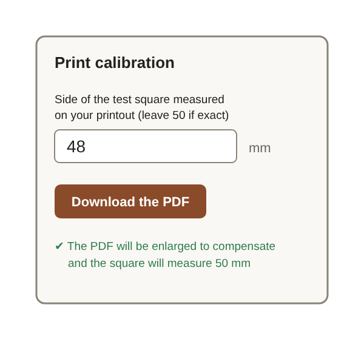

Printing at the right size
Quick version: print at 100 % (“Actual size”), measure the 5 cm square, adjust the calibration if needed, then assemble the pages following the layout on the first page.
1. Print at actual size
In your computer’s print settings, choose “Actual size” or “Scale 100 %”. Avoid “Fit to page”: the pattern pieces would no longer be to scale.

Where to find this setting depending on your software:
- Chrome or Edge: Print → More settings → Scale: “Custom”, 100.
- Firefox: Print → Scale: 100 %.
- Adobe Reader: Print → Page Sizing: “Actual size”.
- Preview (Mac): Print → Scale: 100 %.
- Smartphone: the setting is not always available; preferably print from a computer.
Note: these labels may vary depending on the version of your software.
2. Check the 5 cm test square
Each PDF contains a 5 × 5 cm test square. Measure it with a ruler: it must measure 50 mm. On Letter paper (US, Canada) the square is 2 inches, i.e. 50.8 mm: in that case, 50.8 is the exact value in the calibration field.

3. Correct if needed
If your printer still shrinks the page, enter the value you measured in “Print calibration”, which is on every “Create a pattern” page (and on the Pen and glasses holder page), then download the PDF again: it will be resized to the right size. In the example, the square measures 48 mm. If you have switched the tool to inches, measure and enter the side in inches instead (the 5 cm square is about 1.97 in).


4. Assembling the pages
Large pieces are split over several A4 or Letter pages (depending on the paper you chose next to the download button). The first page of the PDF shows the assembly layout, the number of pages and the list of pieces to cut.
At the top of each page, a label gives its place in the layout (for example “Page 12 – column 2, row 4”) and its neighbours (“below: page 14 | left: page 11 | above: page 9”).
Lay the grey 1.5 cm overlap strips over the neighbouring page, so that the lines continue exactly from one page to the next. Fix them with masking tape: being paper, it is easy to cut, peel off and stick again.
5. Reading the pattern: lines and overlaid pieces
To save paper, some pieces are drawn inside the piece they are derived from: the lining inside the front, the interfacing inside the collar, and so on.
- Pieces to cut directly: red line for the cutting line (seam allowance included), black line for the stitching line.
- Pieces to trace: each has its own colour, its own line style (dashes, dots) and its name written in its colour. The legend on the first page gives the key.
- Where only one line appears, both pieces share the same outline.
How to trace: lay tracing paper, tissue paper or pattern paper over the piece, and go over the outline of the piece you need with a pencil, including its marks (notches, grain line). You can also use a tracing wheel and dressmaker's carbon paper. Then cut the main pieces directly from the pattern.
The pieces to trace are listed separately in the summary on the first page.
6. Another option: video projection
For large pieces, such as those of a safari jacket, instead of printing and assembling 25 to 30 A4 pages you can project the pattern directly onto the fabric with a video projector and the free Pattern Projector app. On every “Create a pattern” page, the “One-page PDF for projectors” button gives all the pieces at 1:1 scale on a single page, with the 5 × 5 cm square used to calibrate the projection.
A preconceived idea: video projection is expensive…
A budget HD video projector costs about 80 euros new (roughly the same in dollars or pounds), with automatic focus, automatic keystone correction and Bluetooth or Wi-Fi compatible with Android and Apple, which spares you a cable and lets you use it from a phone or tablet. Its lens will not be dust-proof, and it will be noisy… but it will spare you the printing and assembling sessions. I cannot imagine going back. The only thing: you will need to fix it to the ceiling, above your cutting table.
And of course, you can find second-hand ones…
An introductory video: How to Use Pattern Projector for Sewing for Beginners! (Projector Sewing channel).
Learn more: Sewing with a projector.
7. Having it printed in large format
Don’t want to tape A4 pages together or use a projector? You can have your pattern printed in large format, on large sheets (A0) or on a roll. It is a paid service, but an inexpensive one: expect a few euros for a garment. It is offered by online print shops that specialise in sewing patterns, or by a copy shop near you.
- Send the file downloaded with the “One-page PDF for projectors” button: it holds all the pieces at 1:1 scale on a single page, with no taping.
- Ask for printing at 100% (actual size), without “fit to page”.
- Black and white is enough.
- When you receive it, measure the test square before cutting.
8. Share your measurements and keep a record
At the bottom of the summary of each pattern, the “Share and keep a record” box offers two tools:
- Share: a link that opens the pattern already set up. Tick “Include my measurements” or not. You can use it, for example:
- when someone sews for you, to send them your measurements;
- to show a friend the pattern you designed, without your measurements;
- to give your measurements to your dressmaker or tailor.
- Summary sheet: one A4 page to print or save as PDF, with your sketch, measurements, options and a link to reopen the pattern. See an example sheet (lined women’s safari jacket, size 34, petite height, all other measurements and options at their defaults), just to show the information it contains.
In the Share menu, “Copy as text” also gives your settings as text, to paste into your notes or a message.
Privacy: the measurements travel inside the link itself, after the “#” sign. That part is never sent to the website: your measurements only go to the person you send the link to. When you receive measurements, yours are kept aside under “My measurements”, in the Share menu.